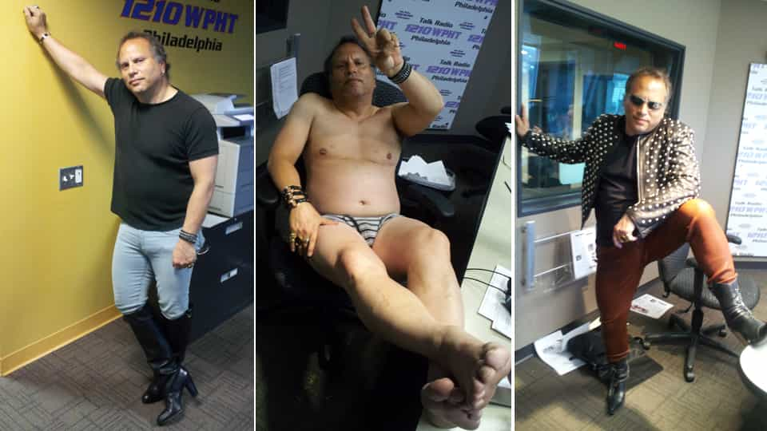
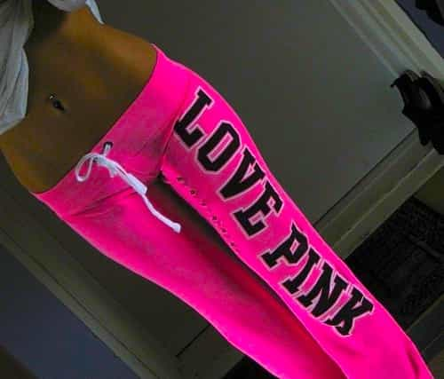

Emmanuel is a pompous git who enjoys the company of girly mistresses, spirited men, endless buffets and luxurious clothes. He can be found on Twitter at @Goldsteineum.


Walk into any company office in the United States, and take a good look at the people there. You’ll see some men in grey or navy suits, other men in chinos and tacky striped shirts. In fact, the electronics manufacturer Samsung made an academic documentary comparing the typical American male and female office workers:
The documentary, while brief, is accurate – in an office where the average man might be wearing an oxford shirt and tie, the typical woman is wearing at least one large piece of clothing in a loud tacky color, and is altogether much less formal. Not to worry, she doesn’t stop to consider whether she’s too old, fat or ugly to pull off such gaudy, frumpy clothing – she’s so empowered that grace and humility are irrelevant. Her clothes are so sloppy even Goodwill wouldn’t take them. Lest you think I am making all this up, take a gander at one of the most august institutions in the land, Congress, and its freshman class of 2013:
Even though there are several times more men than women, not one man appears in bright red, blue, pink or yellow. For the men, it gets about as radical as a light grey suit, plus the weirdo wearing a red shirt. The men are nearly identical – they wear conservative suits and shirts, and occasionally loud neckties. The women, on the other hand, have never met a gauche shade of neon they wouldn’t wear. Why are American women so hell bent on attention whoring, precisely in the places where they say they want to be taken seriously? Why do women ‘fight for equality’ by swapping outfits with Bozo the Clown? Why are old white women so desperate to show us their wrinkly cleavage? It used to be common convention, that the uglier and saggier you are, the quieter your clothing should be.
I’ve yet to meet any group of straight men that can match the narcissism of the American woman at work. All I could find was the case of Buzz Bissinger, a GQ contributor who later checked into rehab for a shopping addiction. As far as I can tell, he is the male analog to the women I describe. And it is not pretty. Oh, it turns out he’s had some homosexual encounters as well. I’d love to see a straight man test the bounds of ‘equality,’ and dress like these buffoons, and still keep his job.

A part of me likes the fact that this shenanigans is widely accepted. It’s fun to imagine there’s some fat bald dude at the top, chomping on a cigar, waving you a big “fuck you,” smirking. “See punk, we have women wearing these clown suits to warn you that the rules only apply to you men. So you can’t say you weren’t warned!” And yet I’ve mentioned this to men at work, and they shrug their shoulders, with a mix of cowardice and resignation. They have never worked a day in their life where things were different, where women were subject to the same expectations. They have no other frame of reference, nor the breadth of mind to recognize how ridiculous these getups are.
The late traditionalist Lawrence Auster made one of those observations, that, once read, seems patently obvious:
The way many women dress today, with half their breasts exposed, is an expression of total disrespect for men. Men are left with three possible responses. To grab the woman, which is illegal; to ogle the woman, which is socially unacceptable; or to affect not to notice the woman at all, which is emasculating. A culture that normalizes such female behavior—i.e. not only not noticing or objecting to it, but prohibiting any objection to it—is extremely sick.
A commenter, James N., added:
To live in a world where something as natural as breathing is a crime is profoundly alienating—it unmans men, which is just exactly what it’s intended to do.
The “hip, cool” posture just covers up how much mojo the hipster has lost. He’s been castrated, and he’s not supposed to care.
St. Bernard of Clairvaux said, “To be always with a woman and not have intercourse with her is harder than to raise the dead.” Men in today’s society have their work cut out for them.
It is ludicrous to take a women in such garb seriously; she is telegraphing “LOOK AT ME,” while you are supposed to respect her as a peer and comrade. Most men see skimpy attire on women as an unmitigated good. Insofar as it lets you know who the strumpets are, I suppose this is so.
The blogger Laura Woods adds:
This sort of revealing dress in professional settings is a last-ditch effort by women to salvage their femininity. They are living daily lives of masculine aggression and drive. They are pressured to destroy their inherent selflessness and desire to serve. They make their breasts appear overblown, near-to-bursting balloons as a way of diverting attention from what they have become. I believe many professional women are bordering on mild schizophrenia, so divided are they between male and female.
Hers may be the most potent explanation yet. I have surmised as much about the ubiquity of the color hot pink, as a microcosm of this drive, and it’s popularity as a marketing tool to women. It is an impossibly ugly, tacky hue, yet women love it. These women are not feminine in any meaningful way, yet they think that having a vagina is something to be proud of. Wearing hot pink is akin to liking an anti-Kony group on Facebook to feel like you’re doing your part to fight genocide.
If there were substance to your intent, you wouldn’t even bother with these pointless public displays. You’d already have an outlet for this part of yourself, where you’re busy accomplishing things of substance. The brand Love Pink is the ultimate expression of this trend – incredibly slutty, trashy and plebeian. It strains the imagination to see a woman in these clothes as anything but an inveterate whore.

As the journalist Steve Sailer put it, the fundamental law of female journalism is “the most heartfelt articles by female journalists tend to be demands that social values be overturned in order that, Come the Revolution, the journalist herself will be considered hotter-looking.” These women of Congress are declaring that merely being recognized as a Congressman is not enough, that they must brazenly inform everyone that they are women too, women who need attention, women who need to be recognized for their sexual value as well as their career accomplishments. Like the female journalists Sailer mocks, this is the battle of foremost concern to our female Congressmen, whose uniforms they wear with unswerving fealty.
To be sure, both sexes crave attention. But the occasional male drama queen aside, there is a stark difference – men earn attention by accomplishment, while women feel entitled to attention for simply being. A man considers it unbecoming to vie for attention without prior accomplishment. Once a man achieves something of note, he contents himself with the respect and loyalty of his peers.
For many women, this simply isn’t enough; it doesn’t sate a woman’s lust for validation as it would a man’s. No, she wants to be the belle of the ball, to have men fawning over her and women envying her, to be the most desired of them all. And the ‘girl power’ message has reached such a crescendo that even looking as comely as a diva now is hardly a prerequisite for acting like one. Each sex has its vices. But if men and women are to work together towards a common end, they ought to dress to reflect that.
Read Next: The American Woman Has Hit An All-Time Low